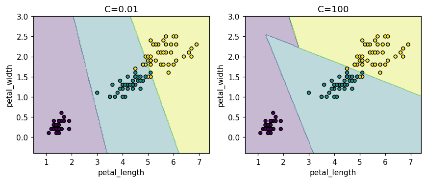
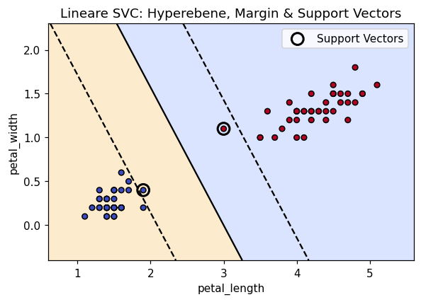

Selbst programmieren
Lies die Aufgabenstellung und vergleiche dein Ziel mit der „Erwarteten Ausgabe“.
Schreibe deine Lösung dann selbst im freien Code-Bereich,
der per Klick auf „▶ Code ausführen“ echtes Python (Pyodide, inkl. numpy/pandas/scikit-learn)
im Browser ausführt. Erst danach die Musterlösung aufklappen.
Alle Aufgaben arbeiten mit dem iris-Datensatz (150 Samples, 4 Features, 3 Klassen).
📐 Lineare SVC & Margin-Breite
MittelTrainiere eine lineare SVC auf zwei Klassen (Setosa vs. Versicolor) mit den Features petal_length und petal_width (Spalten 2 und 3).
- Filtere Train/Test auf
y < 2(nur Klassen 0 und 1) und nutze die Spalten[2, 3]von X. - Trainiere
SVC(kernel='linear', C=1.0)und gib die Test-Accuracy aus. - Gib die Anzahl der Support Vectors,
coef_,intercept_und die Margin-Breite2/||w||aus.
Test-Accuracy: 1.0 Anzahl Support Vectors: 2 Coef: [1.1 0.7] Intercept: [-3.3] Margin-Breite: 1.534
💡 Musterlösung anzeigen
Mit nur zwei (gut trennbaren) Klassen und zwei Features findet die SVC eine breite Trennlinie —
nur 2 Support Vectors (die Punkte direkt am Rand) bestimmen die Lage der Hyperebene,
alle anderen Punkte sind irrelevant für das Modell. Die Margin-Breite 2/||w|| gibt
den Abstand zwischen den beiden parallelen Randgeraden an — je größer, desto „sicherer“ die Trennung.
from sklearn.svm import SVC
mask_train = y_train < 2
Xb, yb = X_train[mask_train][:, 2:4], y_train[mask_train]
mask_test = y_test < 2
Xbt, ybt = X_test[mask_test][:, 2:4], y_test[mask_test]
svc = SVC(kernel='linear', C=1.0)
svc.fit(Xb, yb)
print("Test-Accuracy:", round(svc.score(Xbt, ybt), 3))
print("Anzahl Support Vectors:", svc.support_vectors_.shape[0])
print("Coef:", np.round(svc.coef_[0], 3), "Intercept:", np.round(svc.intercept_, 3))
w = svc.coef_[0]
print("Margin-Breite:", round(2 / np.linalg.norm(w), 3))Test-Accuracy: 1.0 Anzahl Support Vectors: 2 Coef: [1.1 0.7] Intercept: [-3.3] Margin-Breite: 1.534
🔧 Soft Margin: der C-Parameter
MittelVergleiche eine SVC mit kleinem und großem C auf allen drei Klassen von iris.
- Trainiere
SVC(kernel='linear', C=0.01)undSVC(kernel='linear', C=100)aufX_train, y_train. - Gib für beide Train-Accuracy, Test-Accuracy und die Gesamtzahl der Support Vectors (
n_support_.sum()) aus. - Welches Modell hat eine breitere, welches eine schmalere Margin?
C=0.01: train=0.908 test=0.900 #SV=100 C=100: train=0.983 test=0.967 #SV=12
💡 Musterlösung anzeigen
Ein kleines C (0.01) bestraft Fehlklassifikationen kaum — die SVC erlaubt eine breite Margin mit vielen Punkten darin (100 Support Vectors), nimmt dafür niedrigere Accuracy in Kauf (mehr Bias). Ein großes C (100) bestraft Fehler stark — die Margin wird schmal, nur 12 Punkte sind Support Vectors, und das Modell passt sich enger an die Trainingsdaten an (mehr Varianz, höhere Accuracy hier).
from sklearn.svm import SVC
for C in [0.01, 100]:
svc = SVC(kernel='linear', C=C)
svc.fit(X_train, y_train)
print(f"C={C}: train={svc.score(X_train,y_train):.3f} "
f"test={svc.score(X_test,y_test):.3f} #SV={svc.n_support_.sum()}")C=0.01: train=0.908 test=0.900 #SV=100 C=100: train=0.983 test=0.967 #SV=12
Zur Visualisierung verwenden wir nur die zwei Features petal_length und
petal_width (Spalten 2/3): bei C=0.01 ist die Entscheidungsgrenze sehr
glatt und „großzügig“ (breite Margin, viele Punkte landen auf der falschen Seite), bei
C=100 schmiegt sich die Grenze viel enger an die Trainingspunkte an (schmale Margin,
wenige Fehler) — genau das, was die #SV-Werte in der Tabelle oben schon andeuten.
import matplotlib.pyplot as plt
from sklearn.model_selection import train_test_split
X2 = X[:, 2:4]
X2_train, X2_test, y2_train, y2_test = train_test_split(
X2, y, test_size=0.2, stratify=y, random_state=42
)
xx, yy = np.meshgrid(
np.linspace(X2[:,0].min()-0.5, X2[:,0].max()+0.5, 200),
np.linspace(X2[:,1].min()-0.5, X2[:,1].max()+0.5, 200)
)
fig, axes = plt.subplots(1, 2, figsize=(8, 3.5))
for ax, C in zip(axes, [0.01, 100]):
svc = SVC(kernel='linear', C=C)
svc.fit(X2_train, y2_train)
Z = svc.predict(np.c_[xx.ravel(), yy.ravel()]).reshape(xx.shape)
ax.contourf(xx, yy, Z, alpha=0.3, cmap='viridis')
ax.scatter(X2_train[:,0], X2_train[:,1], c=y2_train, cmap='viridis', edgecolor='k', s=20)
ax.set_title(f"C={C}")
ax.set_xlabel("petal_length"); ax.set_ylabel("petal_width")
plt.show()
🌀 Kernel-Trick: linear vs. rbf vs. poly
MittelVergleiche drei verschiedene Kernel der SVC auf iris.
- Trainiere
SVC(kernel=...)für'linear','rbf'und'poly'(jeweils Standard-Parameter). - Gib für jeden Kernel die Test-Accuracy aus (gerundet auf 3 Nachkommastellen).
kernel=linear: test-accuracy=1.000 kernel=rbf: test-accuracy=0.967 kernel=poly: test-accuracy=0.967
💡 Musterlösung anzeigen
Der Kernel-Trick erlaubt der SVC, im Hintergrund eine nichtlineare Transformation der
Features zu „simulieren“, ohne sie explizit zu berechnen — nur über Skalarprodukte
(K(x, x') = φ(x)·φ(x')). Bei iris sind die Klassen schon mit einer
linearen Grenze fast perfekt trennbar, daher liegt linear hier sogar leicht vorne;
rbf und poly liefern fast identische Ergebnisse.
from sklearn.svm import SVC
for kernel in ['linear', 'rbf', 'poly']:
svc = SVC(kernel=kernel)
svc.fit(X_train, y_train)
print(f"kernel={kernel}: test-accuracy={svc.score(X_test, y_test):.3f}")kernel=linear: test-accuracy=1.000 kernel=rbf: test-accuracy=0.967 kernel=poly: test-accuracy=0.967
🚀 SVC mit sklearn: Scaling in der Pipeline
SchwerZeige, wie wichtig Feature Scaling für die SVC ist, wenn Features stark unterschiedliche Skalen haben.
- Erzeuge
X2 = X.copy()und multipliziere Spalte 0 (sepal_length) mit1000. - Splitte
X2, ygenauso wieX, y(stratify, random_state=42). - Trainiere eine
Pipeline([('scaler', StandardScaler()), ('svc', SVC(kernel='rbf'))])und eine reineSVC(kernel='rbf')ohne Scaling. Vergleiche die Test-Accuracy.
Mit Scaling: 0.967 Ohne Scaling: 0.5
💡 Musterlösung anzeigen
Der rbf-Kernel basiert auf euklidischen Abständen (||x - x'||²). Wenn ein Feature
um den Faktor 1000 größer skaliert ist als die anderen, dominiert es den Abstand vollständig — die SVC
„sieht“ praktisch nur noch dieses eine Feature und kollabiert auf Zufallsniveau (0.5). Die
Pipeline mit StandardScaler bringt alle Features auf μ=0, σ=1 und stellt
die ursprüngliche Performance wieder her.
from sklearn.svm import SVC
from sklearn.pipeline import Pipeline
from sklearn.preprocessing import StandardScaler
pipe = Pipeline([('scaler', StandardScaler()), ('svc', SVC(kernel='rbf'))])
pipe.fit(X_train, y_train)
print("Mit Scaling: ", round(pipe.score(X_test, y_test), 3))
svc = SVC(kernel='rbf')
svc.fit(X_train, y_train)
print("Ohne Scaling: ", round(svc.score(X_test, y_test), 3))Mit Scaling: 0.967 Ohne Scaling: 0.5
🎯 decision_function: Abstand zur Hyperebene
MittelNutze decision_function, um zu sehen, wie „sicher“ sich eine binäre SVC bei einzelnen Testpunkten ist.
- Nutze wie in Aufgabe 1 nur die Klassen 0/1 und die Features
[2, 3]. - Trainiere
SVC(kernel='linear', C=1.0). - Gib für die ersten 5 Testpunkte
decision_function(Xbt[:5])(gerundet auf 3 Nachkommastellen) und die zugehörigen Vorhersagenpredict(Xbt[:5])aus.
Decision values: [-1.73 1.03 1.03 -1.73 2.99] Predictions: [0 1 1 0 1]
💡 Musterlösung anzeigen
decision_function gibt den (vorzeichenbehafteten) Abstand jedes Punkts zur Hyperebene
zurück — Werte < 0 liegen auf der Seite von Klasse 0, Werte > 0
auf der Seite von Klasse 1. Je größer der Betrag, desto weiter entfernt der Punkt von der
Entscheidungsgrenze liegt, desto „sicherer“ ist die Vorhersage. predict ist einfach
das Vorzeichen davon, auf die Klassenlabels gemappt.
from sklearn.svm import SVC
mask_train = y_train < 2
Xb, yb = X_train[mask_train][:, 2:4], y_train[mask_train]
mask_test = y_test < 2
Xbt, ybt = X_test[mask_test][:, 2:4], y_test[mask_test]
svc = SVC(kernel='linear', C=1.0)
svc.fit(Xb, yb)
print("Decision values:", np.round(svc.decision_function(Xbt[:5]), 3))
print("Predictions:", svc.predict(Xbt[:5]))Decision values: [-1.73 1.03 1.03 -1.73 2.99] Predictions: [0 1 1 0 1]
📐 SVM-Hyperebene, Margin & Support Vectors plotten
SchwerVisualisiere für eine binäre SVC (Klassen 0 vs. 1, Features petal_length/petal_width) die Hyperebene, die Margin-Grenzen und die Support Vectors.
- Nutze wie in Aufgabe 1
Xb, yb(Klassen 0/1, Spalten 2/3) und trainiereSVC(kernel='linear', C=1.0). - Erzeuge ein Gitter mit
np.meshgridund berechnedecision_functionfür jeden Gitterpunkt. - Zeichne mit
plt.contourdie Linien fürdecision_function = -1, 0, 1(Margin-Rand, Hyperebene, Margin-Rand). - Markiere die Support Vectors (
svc.support_vectors_) zusätzlich mit großen, ungefüllten Kreisen.
Ein Scatterplot mit den Trainingspunkten (farbig nach Klasse), einer durchgezogenen Linie (Hyperebene), zwei gestrichelten Linien (Margin-Rand) und 2 großen Kreisen um die Support Vectors.

💡 Musterlösung anzeigen
Die durchgezogene Linie ist die Hyperebene (decision_function = 0),
die beiden gestrichelten Linien sind die Margin-Grenzen
(decision_function = ±1) — der Abstand zwischen ihnen ist genau die
Margin-Breite 2/||w|| aus Aufgabe 1. Die Support Vectors (große
Kreise) sind die einzigen Punkte, die genau auf den Margin-Grenzen liegen — sie allein
bestimmen Lage und Orientierung der Hyperebene; verschiebt man irgendeinen anderen Punkt
(außerhalb der Margin), ändert sich an der Lösung nichts.
svc = SVC(kernel='linear', C=1.0)
svc.fit(Xb, yb)
xx, yy = np.meshgrid(
np.linspace(Xb[:,0].min()-0.5, Xb[:,0].max()+0.5, 200),
np.linspace(Xb[:,1].min()-0.5, Xb[:,1].max()+0.5, 200)
)
Z = svc.decision_function(np.c_[xx.ravel(), yy.ravel()]).reshape(xx.shape)
plt.contourf(xx, yy, Z, levels=[-100,0,100], alpha=0.2, colors=['#f59e0b','#4f7cff'])
plt.contour(xx, yy, Z, levels=[-1,0,1], colors='k', linestyles=['--','-','--'])
plt.scatter(Xb[:,0], Xb[:,1], c=yb, cmap='coolwarm', edgecolor='k', s=25)
plt.scatter(svc.support_vectors_[:,0], svc.support_vectors_[:,1], s=120,
facecolors='none', edgecolors='k', linewidths=2, label='Support Vectors')
plt.xlabel("petal_length"); plt.ylabel("petal_width")
plt.title("Lineare SVC: Hyperebene, Margin & Support Vectors")
plt.legend()
plt.show()